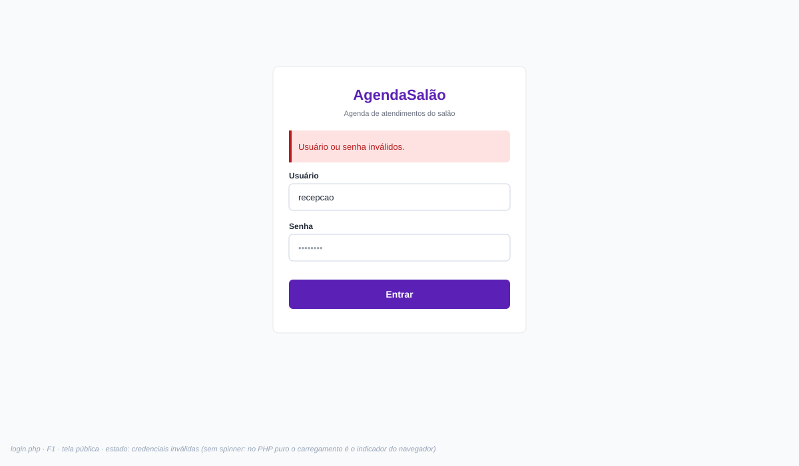
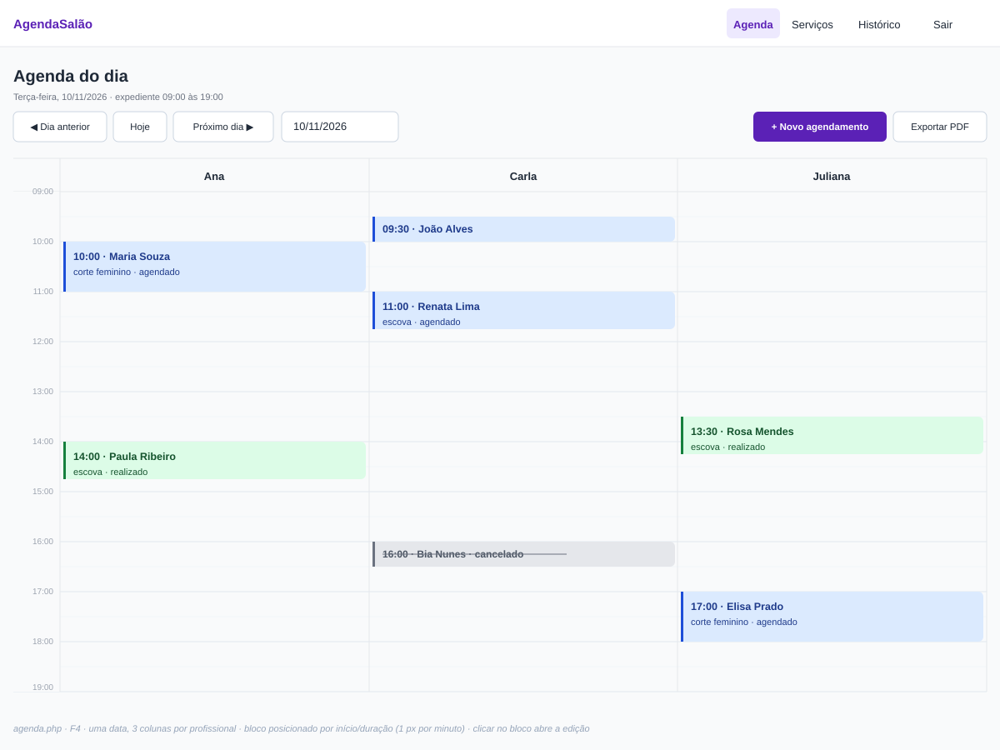
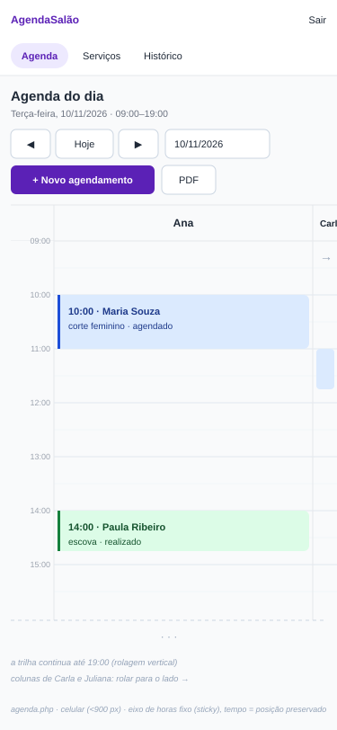
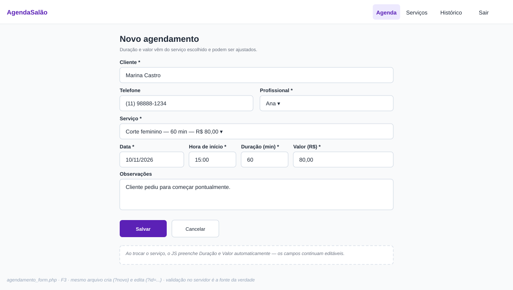
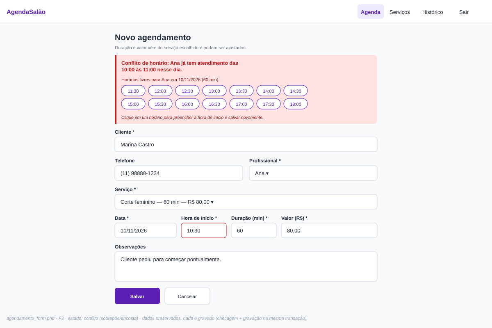
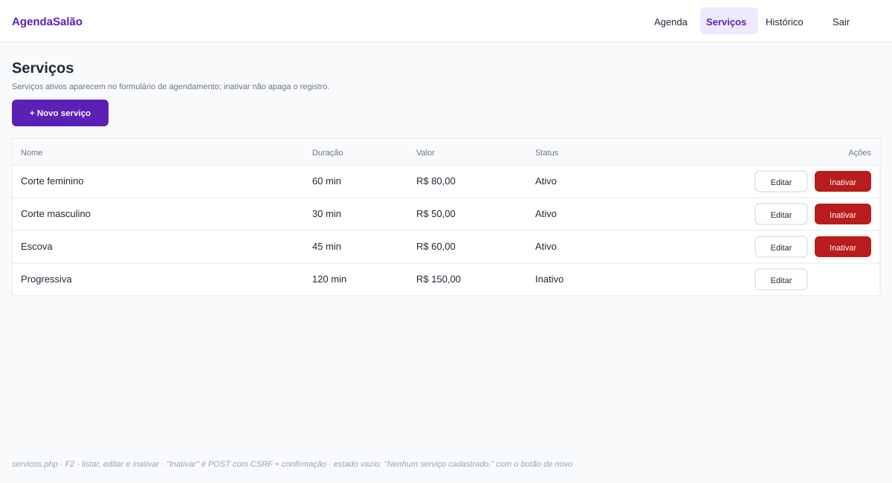
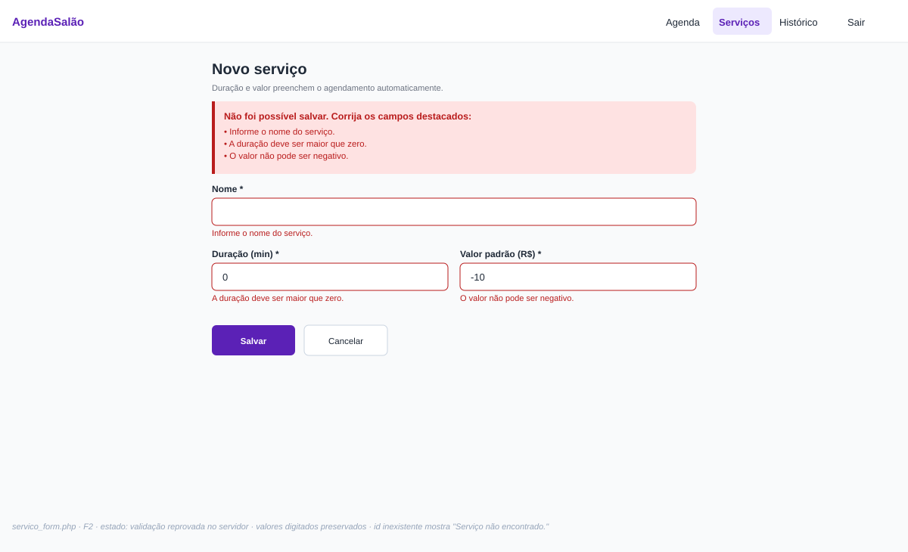
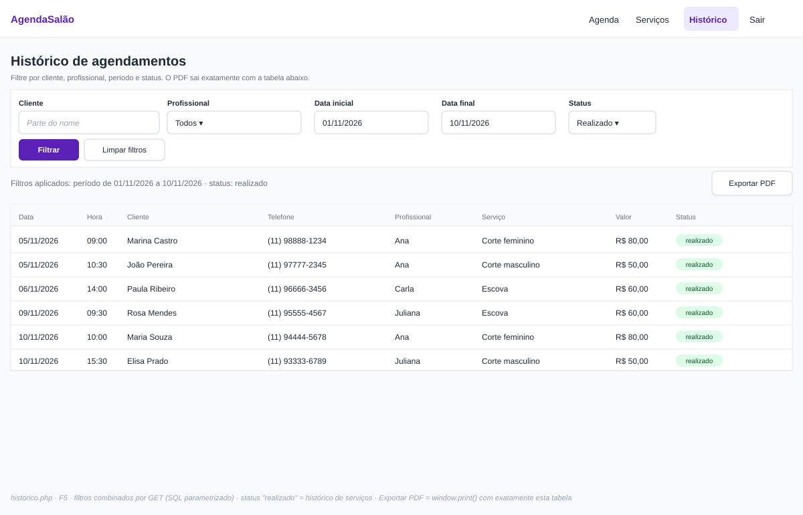
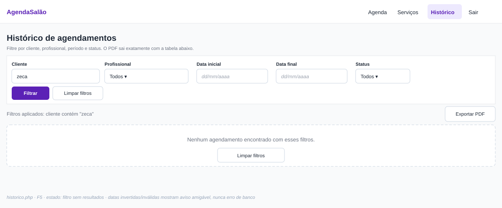

Wireframes do AgendaSalão
Uma imagem SVG por tela/estado do NAVEGACAO.md, seguindo o DESIGN.md. Vetoriais, sem dependências — abrem em qualquer navegador.
1. login.php — Login (F1) · estado: credenciais inválidas

2. agenda.php — Agenda do dia (F4) · dia com agendamentos, 3 colunas

3. agenda.php — Agenda do dia · estado: dia vazio
 4. agenda.php — Agenda no celular (<900 px) · eixo de horas fixo, colunas rolam
4. agenda.php — Agenda no celular (<900 px) · eixo de horas fixo, colunas rolam

5. agendamento_form.php — Novo agendamento (F3)

6. agendamento_form.php — estado: conflito de horário (CA2/CA5)

7. servicos.php — Lista de serviços (F2)

8. servico_form.php — estado: erros de validação

9. historico.php — Histórico com filtros (F5) · status: realizado

10. historico.php — estado: filtro sem resultados
